← Overall ranking · Lab gallery
F08 · Projects List — version ranking
Family task: Projects list (/projects): follow active work from kickoff to completion - see the projects in this workspace, their status/start, and open one to follow milestones, progress, messages and files.
Baseline context: Captured reality (documented family constraint, not a defect): exactly 2 projects - Khandesh Spice D2C E-Commerce Store and B2B Wholesale Ordering Portal, both 'In progress', started 10/5/2026; only the first has a captured detail cockpit (F09). Versions must not invent milestones/progress for the list page.
Leading version(s): V3 · Confidence: medium — Complete screenshot set + interaction/axe/keyboard runs in one pinned environment; single evaluator; designed empty/loading/error states generally have no public trigger and were not observed unless a version's task notes say so; system-font fallback instead of Outfit.
Tie groups: none (all gaps > 2.0) · Production comparison: Comparison place #6 of 6 at 53.8. Lab-only winner remains V3.
Lab-only scores
| Rank | Version | Total /100 | Task clarity (w25) | Usability (w20) | Visual craft (w15) | Responsive (w15) | Accessibility (w15) | Integrity (w10) | Major+ issues |
|---|---|---|---|---|---|---|---|---|---|
| #1 | V3 · Next-Step Hero | 73.8 | 4 /4 | 3 /4 | 3 /4 | 2 /4 | 2 /4 | 3 /4 | 1 |
| #2 | V1 · Calm Grid | 71.2 | 3 /4 | 3 /4 | 3 /4 | 3 /4 | 2 /4 | 3 /4 | 0 |
| #3 | V5 · Bento Board | 65.0 | 3 /4 | 3 /4 | 2 /4 | 3 /4 | 2 /4 | 2 /4 | 0 |
| #4 | V2 · Ops Ledger | 62.5 | 2 /4 | 3 /4 | 2 /4 | 3 /4 | 3 /4 | 2 /4 | 0 |
| #5 | V4 · Delivery Story | 57.5 | 2 /4 | 2 /4 | 3 /4 | 3 /4 | 2 /4 | 2 /4 | 0 |
Formula: total = Σ(weight × score ÷ 4). Dimension scores are integers 0–4 against fixed anchors (25 task clarity · 20 usability · 15 visual craft · 15 responsive · 15 accessibility · 10 integrity). Totals within 2.0 form a practical group; ties are ordered by task clarity, fewer major/critical issues, then responsive score; exact ties after these checks share rank (=).
Production page report and comparison rank
Comparison place #6 of 6 at 53.8. Lab-only winner remains V3.
Live production reference. Same rubric, separate from lab version records. Not a lab template and not an automatic winner. Route: /projects. Outcome: reviewed. Confidence: low.
| Comparison place | Page | Total /100 | Task clarity | Usability | Visual craft | Responsive | Accessibility | Integrity | Major+ issues |
|---|---|---|---|---|---|---|---|---|---|
| #6 | Production · /projects | 53.8 | 2 /4 | 2 /4 | 2 /4 | 3 /4 | 2 /4 | 2 /4 | 1 |
Heading Projects was visible. One pass also showed a Try again control, so that load did not present the list. Other passes did not confirm project rows or a detail link. This is incomplete observation, not proof that every load is empty.
Order if production is included
- V3 — 73.8 · comparison #1
- V1 — 71.2 · comparison #2
- V5 — 65.0 · comparison #3
- V2 — 62.5 · comparison #4
- V4 — 57.5 · comparison #5
- Production — 53.8 · comparison #6
Lab-only ranks in the table above are unchanged. Inside a 2.0-point group, task clarity, fewer major issues, then responsive score decide the comparison place.
Observed issues
- Shared shell contrast finding.
Not observed
- Project status and the control that opens a project were not confirmed.
Desktop document overflow was 0 on reviewed routes. An earlier mobile pass of accounts A and B also had no document overflow and a menu control; opening that menu was not proven. Dark mode was not activated. axe-core reported four serious color-contrast nodes on the shared shell. No production screenshot was stored. None stored. Production pages can contain account data.
Shared shell / family-wide findings
- Client-facing audit/endpoint language pervades the family ('captured', 'frozen fields', 'GET /api/v1/projects', 'Gate A') - scored per version by prominence; the underlying no-invention discipline itself is credited under integrity.
- No version scrolls horizontally at 390/768/1440 - a clean family on layout.
- 'Lab states' menu (Loaded/Empty/Skeleton/502) is present as demo conveyance of designed states.
Per-version evidence
#2 · V1 · Calm Grid — 71.2
Source (unmodified): client-portal-lab/families/F08-projects-list/V1/index.html
· Raw evidence: review-evidence/raw/F08-V1-raw.json
Task clarity (3/4): Conventional, immediately legible: banner ('2 projects are in progress... open a project to follow its milestones'), 2/2/started KPI cards, filter chips, then the two project cards with Open project.
Usability (3/4): Sort select ('Captured order') and chips work; each card exposes its own open/detail action. With two records, that is all the task needs.
Visual craft (3/4): Calm grid, honest whitespace; card copy still explains capture provenance instead of project value (family trait).
Responsive (3/4): Cards stack cleanly, no horizontal scroll at any width; mobile shell menu affordance is the shared sliver in this shell variant.
Accessibility (2/4): Axe contrast x4 - the family's widest light exposure, though on secondary text; focus and labels otherwise solid.
Integrity (3/4): Explicit that the second project has no captured detail page, so no cockpit is invented for it - documented restraint, expressed in audit language.
Interaction / task results (V1)
| Task | Result |
|---|---|
| T1_first_screen | H1='Projects'; see desktop/mobile top screenshots |
| T2_keyboard | 12/12 stops focus-styled, 12/12 in viewport |
| T3_core_desktop | pass via select "Captured order" |
| T3_core_mobile | pass via select "Captured order" |
| T4_theme | toggle: pass (dark false->true); dark capture applied=True |
| T5_demo_honesty | data-demo click produced no visible toast in probe |
| T6_mobile | h-scroll mobile=0; nav probe opened=True btnW=3; tap<24px=3 |
| T7_axe | desktop: color-contrast x4; dark: color-contrast x4 |
Issues (2)
- minor
F08-V1-I1axe desktop: color-contrast x4 (a[aria-current="page"] > span, i) Fix any of the following: Element has insufficient color contrast of 4.33 (foreground color: #465fff, background color: (axe-core 4.10.2 desktop) - minor
F08-V1-I2axe dark: color-contrast x4 (a[aria-current="page"] > span, i) Fix any of the following: Element has insufficient color contrast of 3.94 (foreground color: #5b7bff, background color: (axe-core 4.10.2 dark)

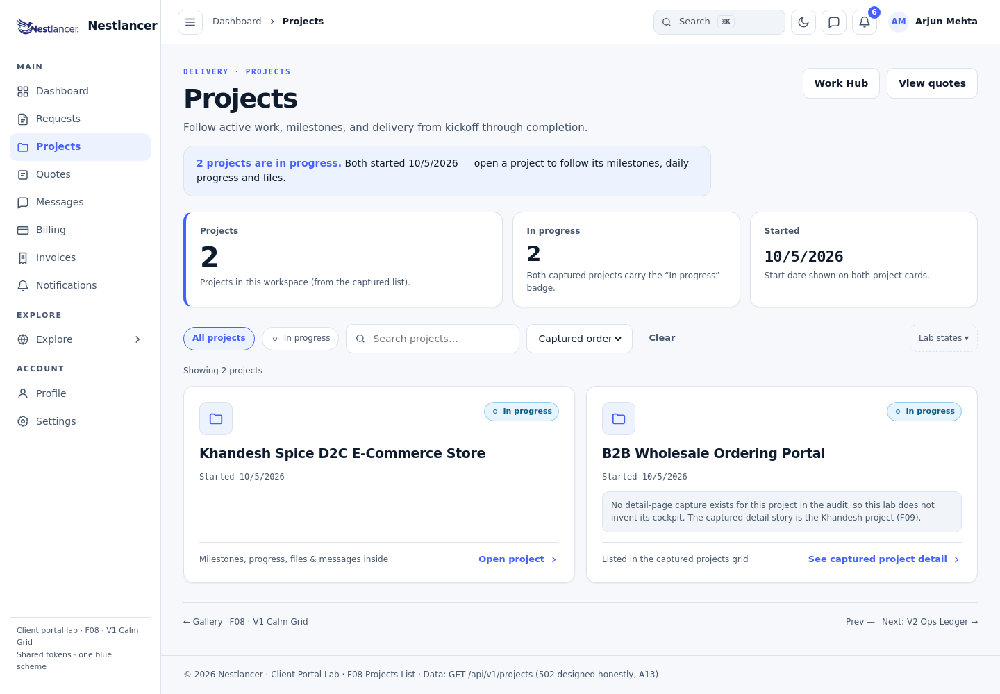

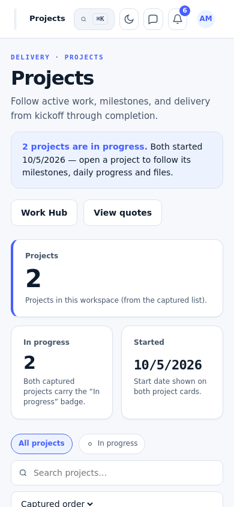

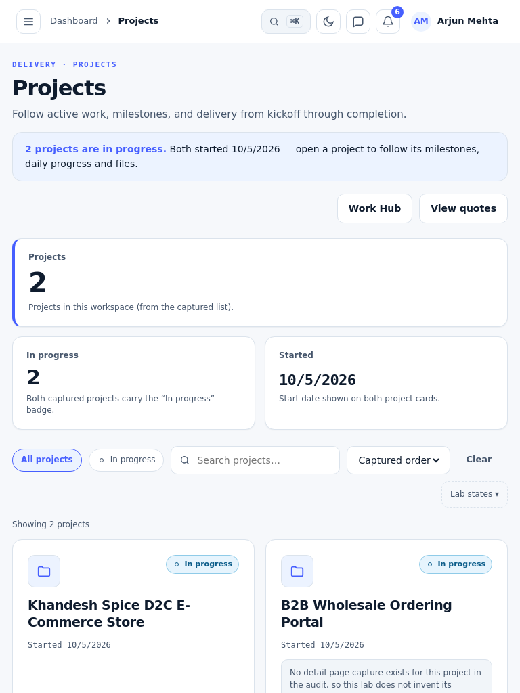

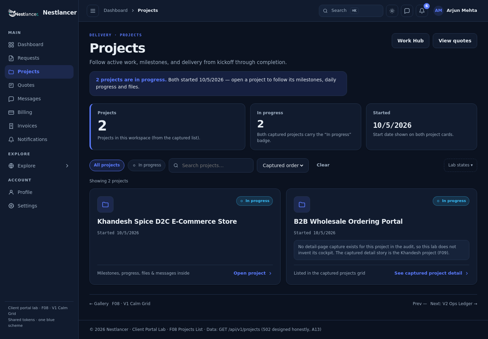

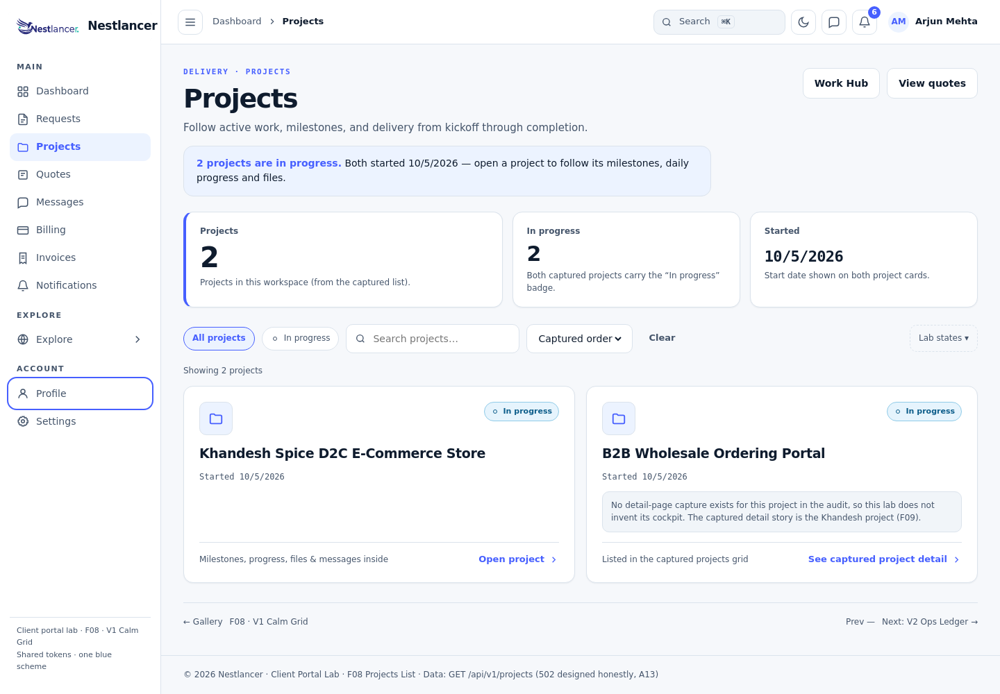


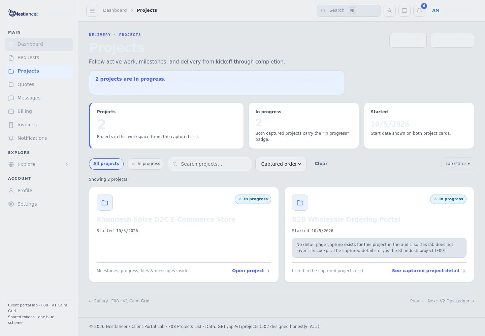
#4 · V2 · Ops Ledger — 62.5
Source (unmodified): client-portal-lab/families/F08-projects-list/V2/index.html
· Raw evidence: review-evidence/raw/F08-V2-raw.json
Task clarity (2/4): Ledger table's third column is 'DETAIL CAPTURE' (Captured (F09)/List only) - audit metadata, not client information - and a 2-row table needs scanning discipline out of proportion to its content.
Usability (3/4): aria-sort header button, working status filter (In progress) and honest 'Showing 2 of 2'. Functionally capable, presentation is the issue.
Visual craft (2/4): Sparse ledger with mono endpoint header ('2 RECORDS - GET /API/V1/PROJECTS') reads as a developer tool, not a client portal.
Responsive (3/4): Mobile card fallback is real (board shows stacked labelled cards, not a squashed table).
Accessibility (3/4): Best automated picture in family: contrast x2 only, real table semantics, 3 small targets. Held from 4 by shared secondary-text contrast.
Integrity (2/4): Footer explains 'Sort/search are client-side - the list endpoint takes no query params (Gate A)' - an internal gate reference and raw endpoint exposed to clients.
Interaction / task results (V2)
| Task | Result |
|---|---|
| T1_first_screen | H1='Projects'; see desktop/mobile top screenshots |
| T2_keyboard | 12/12 stops focus-styled, 12/12 in viewport |
| T3_core_desktop | pass via select "In progress" |
| T3_core_mobile | pass via select "In progress" |
| T4_theme | toggle: pass (dark false->true); dark capture applied=True |
| T5_demo_honesty | data-demo click produced no visible toast in probe |
| T6_mobile | h-scroll mobile=0; nav probe opened=True btnW=34; tap<24px=3 |
| T7_axe | desktop: color-contrast x2; dark: color-contrast x2 |
Issues (3)
- minor
F08-V2-I1axe desktop: color-contrast x2 (a[aria-current="page"] > span, i) Fix any of the following: Element has insufficient color contrast of 4.33 (foreground color: #465fff, background color: (axe-core 4.10.2 desktop) - minor
F08-V2-I2axe dark: color-contrast x2 (a[aria-current="page"] > span, i) Fix any of the following: Element has insufficient color contrast of 3.94 (foreground color: #5b7bff, background color: (axe-core 4.10.2 dark) - minor
F08-V2-I3Internal 'Gate A' + raw endpoint copy in client UI (desktop screenshot)

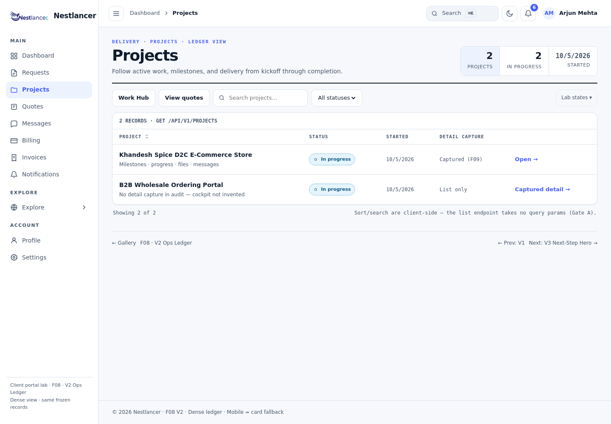

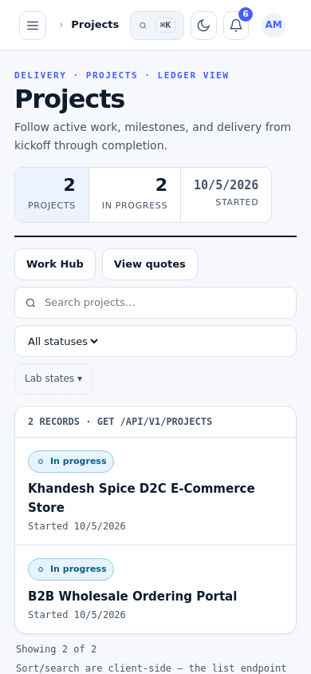

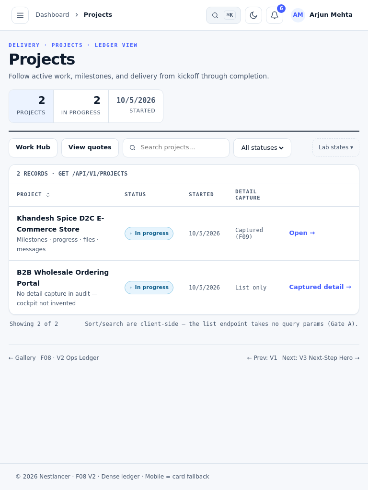

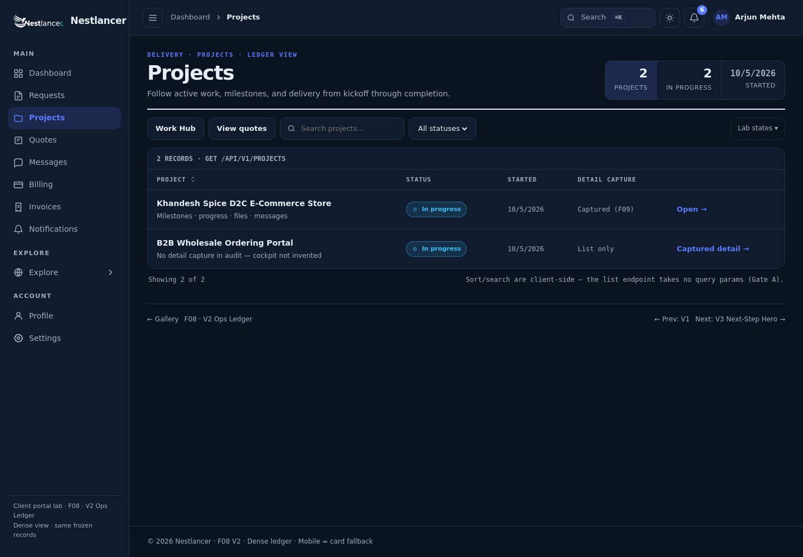

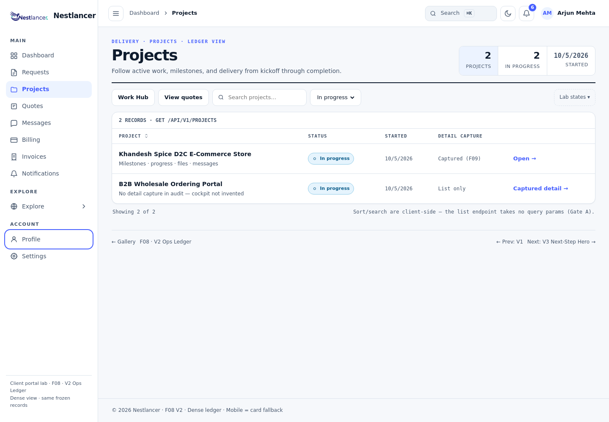


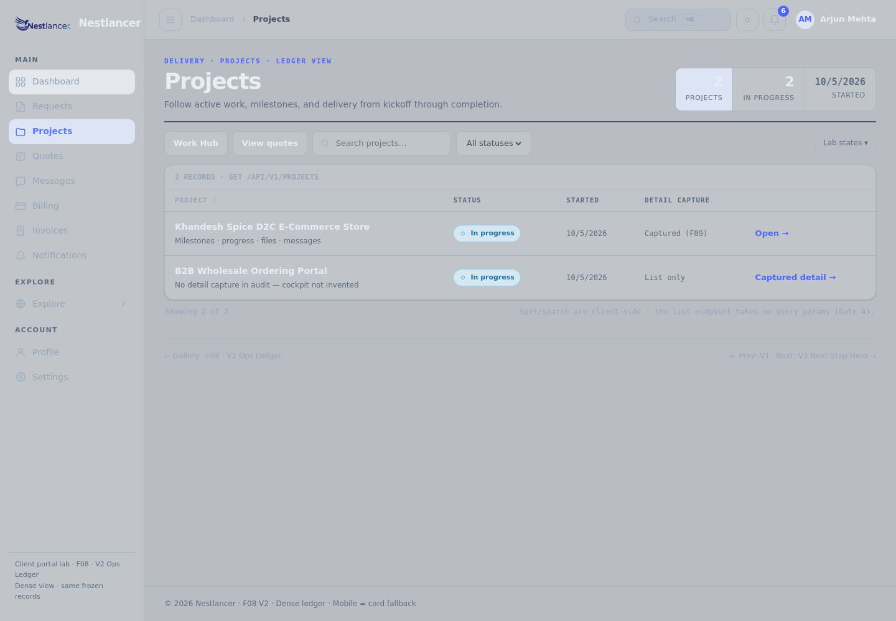
#1 · V3 · Next-Step Hero — 73.8
Source (unmodified): client-portal-lab/families/F08-projects-list/V3/index.html
· Raw evidence: review-evidence/raw/F08-V3-raw.json
Task clarity (4/4): 'Continue where you left off - Khandesh Spice D2C E-Commerce Store is in progress' with Open project up front: with one fully-captured project, prioritising it is the clearest possible answer to 'what do I open?'
Usability (3/4): Sort works; hero + cards give two depths of the same choice. Open affordances repeat (hero, card, sticky) without conflicting destinations.
Visual craft (3/4): Confident hero with the big '2 projects in progress' stat; tidy cards below.
Responsive (2/4): Mobile sticky 'Open Khandesh project' button renders half-clipped at the viewport bottom edge, overlapping the hero stat card - a sticky-CTA implementation flaw at exactly the size it targets.
Accessibility (2/4): Contrast x2, but an overlapping sticky CTA risks obscuring focused/content elements while scrolling.
Integrity (3/4): 'Nothing is guessed here' restraint for the list-only project; engagement count-up uses only frozen counts (2/2).
Interaction / task results (V3)
| Task | Result |
|---|---|
| T1_first_screen | H1='Projects'; see desktop/mobile top screenshots |
| T2_keyboard | 12/12 stops focus-styled, 12/12 in viewport |
| T3_core_desktop | pass via select "Captured order" |
| T3_core_mobile | pass via select "Captured order" |
| T4_theme | toggle: pass (dark false->true); dark capture applied=True |
| T5_demo_honesty | data-demo click produced no visible toast in probe |
| T6_mobile | h-scroll mobile=0; nav probe opened=True btnW=36; tap<24px=5 |
| T7_axe | desktop: color-contrast x2; dark: color-contrast x3 |
Issues (4)
- minor
F08-V3-I1axe desktop: color-contrast x2 (a[aria-current="page"] > span, i) Fix any of the following: Element has insufficient color contrast of 4.33 (foreground color: #465fff, background color: (axe-core 4.10.2 desktop) - minor
F08-V3-I2axe dark: color-contrast x3 (a[aria-current="page"] > span, i) Fix any of the following: Element has insufficient color contrast of 3.94 (foreground color: #5b7bff, background color: (axe-core 4.10.2 dark) - minor
F08-V3-I35 mobile tap targets under 24px, e.g. [{'text': 'Open →', 'w': 54, 'h': 21}, {'text': 'Captured detail →', 'w': 130, 'h': 21}, {'text': '← Gallery', 'w': 57, 'h': 19}] (raw tapTargetsMobile) - major
F08-V3-I4Sticky mobile CTA half-clipped at viewport bottom, overlapping content (mobile board)

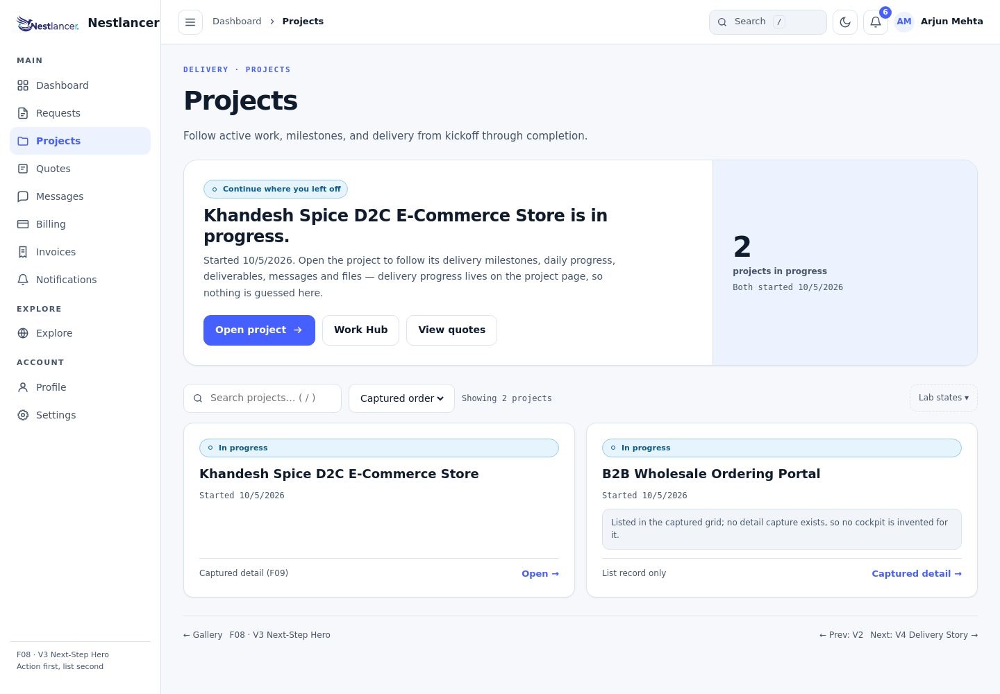

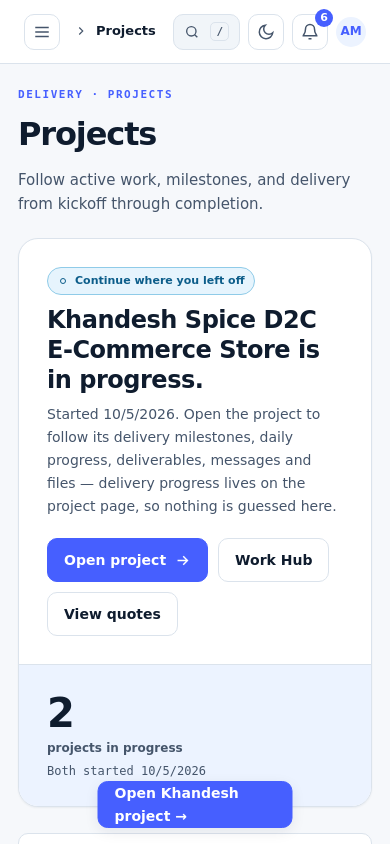

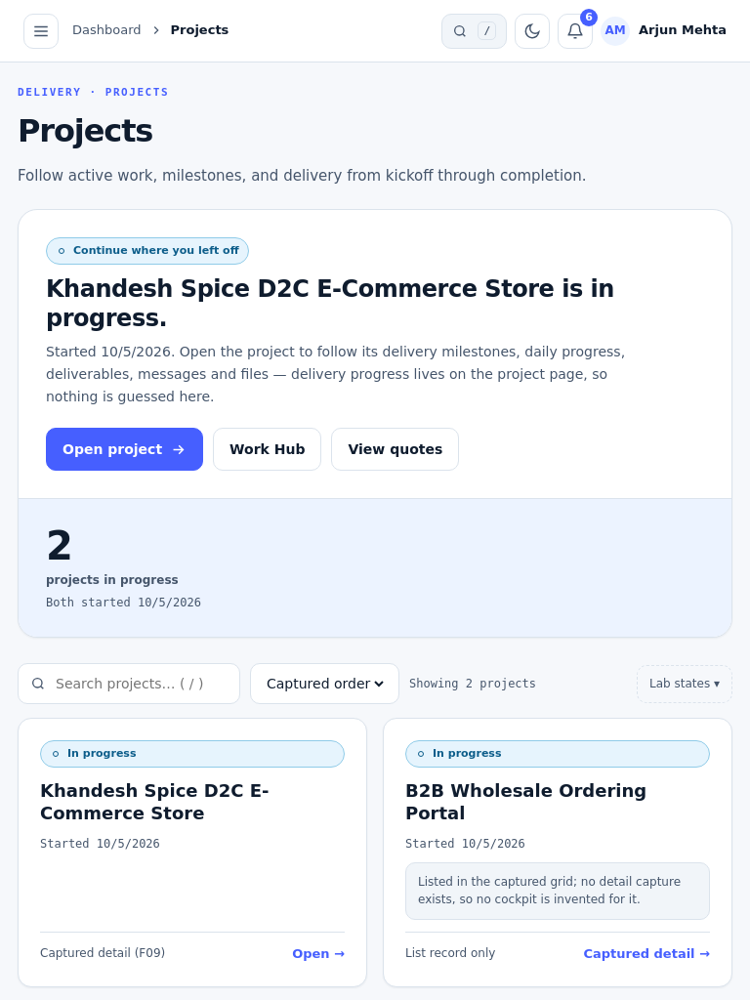

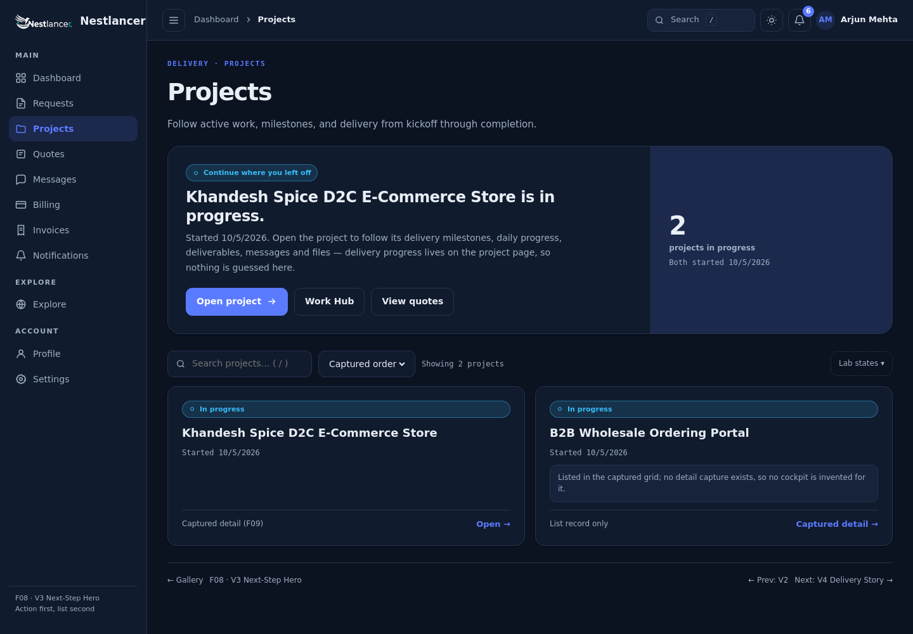

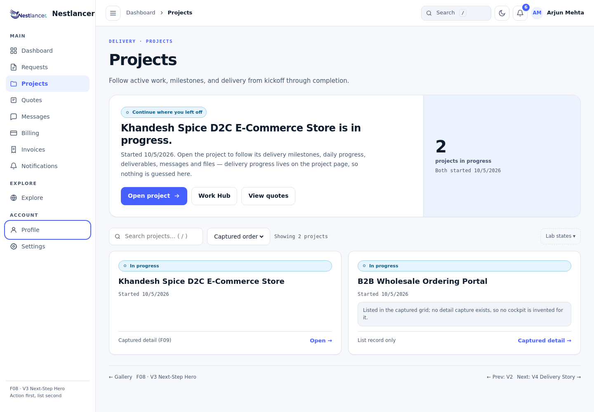


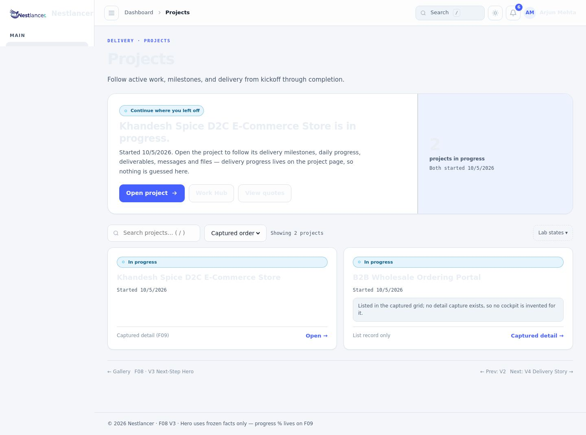
#5 · V4 · Delivery Story — 57.5
Source (unmodified): client-portal-lab/families/F08-projects-list/V4/index.html
· Raw evidence: review-evidence/raw/F08-V4-raw.json
Task clarity (2/4): Two projects become 'Chapter 01 - Started 10/5/2026' in a story the client must decode; search placeholder even reads 'Search the story...' - narrative over findability.
Usability (2/4): Search works, but 'Continue the story' is a vaguer action verb than Open project, and chronology adds nothing when both projects share one start date.
Visual craft (3/4): The timeline chapter is nicely drawn with honest grouping copy - craft in service of a weak concept for this task.
Responsive (3/4): Chapter timeline stacks cleanly at 390px with a proper sticky rail dot; no horizontal scroll.
Accessibility (2/4): Contrast x3; chapter semantics are text ('CHAPTER 01' pill) not just graphics.
Integrity (2/4): Refuses an invented timeline (good) but narrates that refusal at length in audit voice ('not spread across an invented timeline', 'honestly unwritten').
Interaction / task results (V4)
| Task | Result |
|---|---|
| T1_first_screen | H1='Projects'; see desktop/mobile top screenshots |
| T2_keyboard | 12/12 stops focus-styled, 12/12 in viewport |
| T3_core_desktop | pass via searched "a" |
| T3_core_mobile | pass via searched "a" |
| T4_theme | toggle: pass (dark false->true); dark capture applied=True |
| T5_demo_honesty | data-demo click produced no visible toast in probe |
| T6_mobile | h-scroll mobile=0; nav probe opened=True btnW=36; tap<24px=4 |
| T7_axe | desktop: color-contrast x3; dark: color-contrast x3 |
Issues (2)
- minor
F08-V4-I1axe desktop: color-contrast x3 (a[aria-current="page"] > span, .avatar > i) Fix any of the following: Element has insufficient color contrast of 4.33 (foreground color: #465fff, background color: (axe-core 4.10.2 desktop) - minor
F08-V4-I2axe dark: color-contrast x3 (a[aria-current="page"] > span, .avatar > i) Fix any of the following: Element has insufficient color contrast of 3.94 (foreground color: #5b7bff, background color: (axe-core 4.10.2 dark)

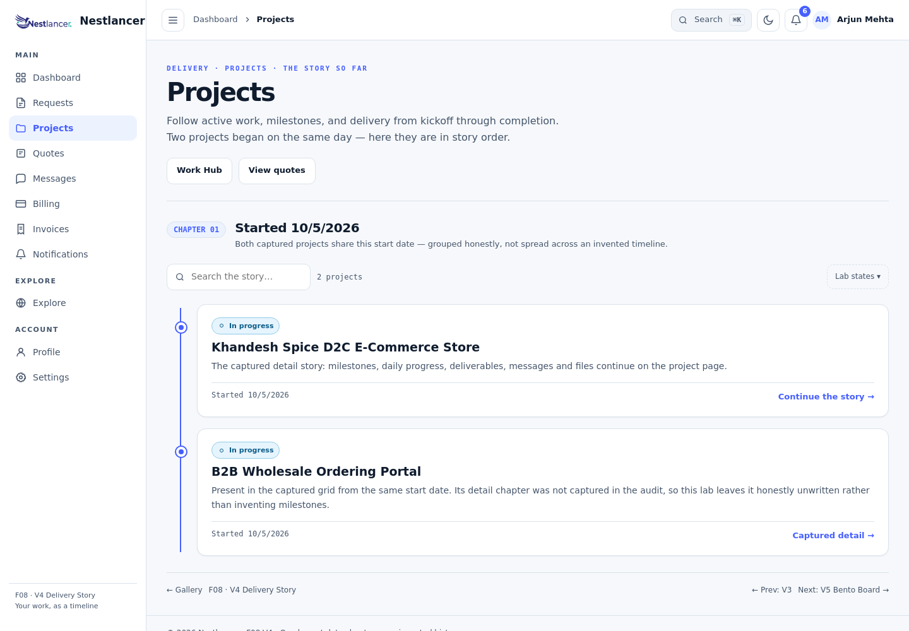

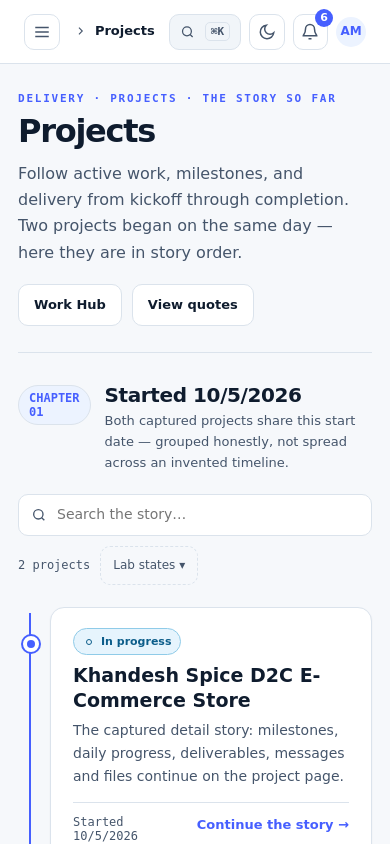

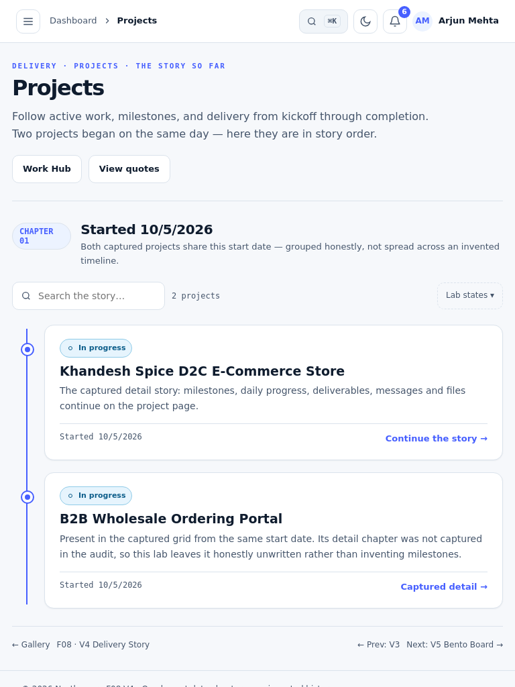

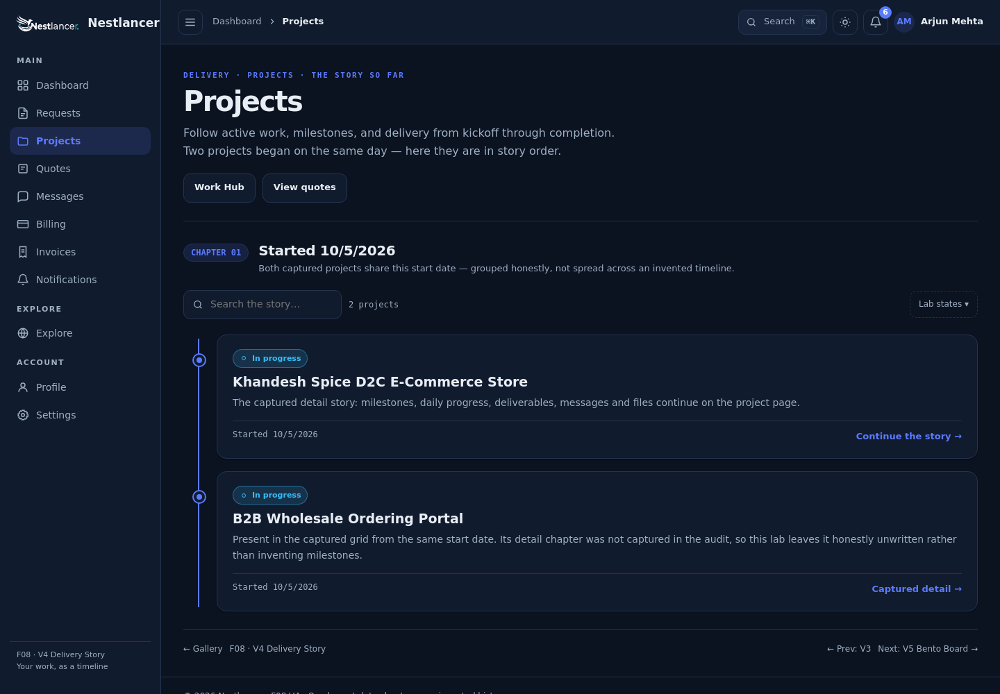

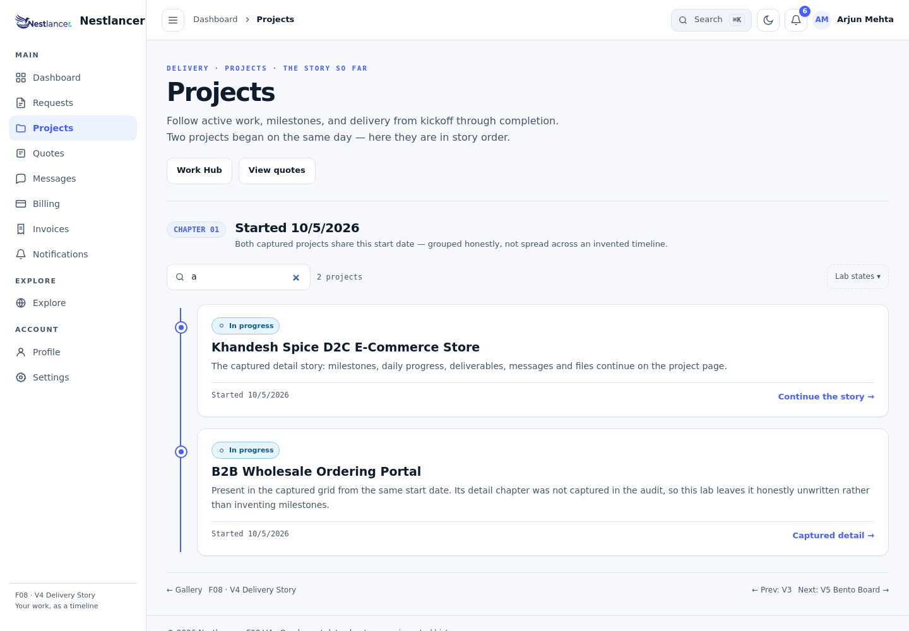

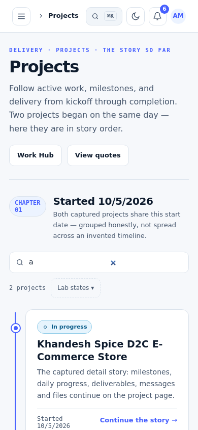

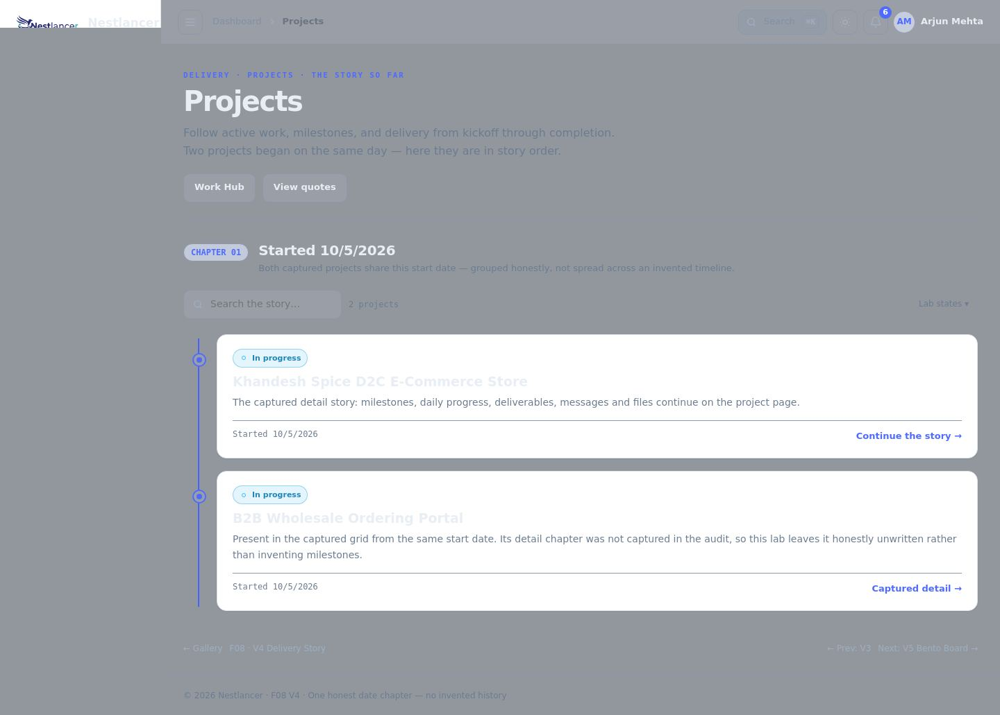
#3 · V5 · Bento Board — 65.0
Source (unmodified): client-portal-lab/families/F08-projects-list/V5/index.html
· Raw evidence: review-evidence/raw/F08-V5-raw.json
Task clarity (3/4): Tiles plus a preview pane ('PREVIEW - FROZEN FIELDS ONLY') let a client inspect the selected project without leaving - helpful, though the pane largely repeats the tile.
Usability (3/4): Search works; whole tiles are buttons with Enter-to-open and arrow-key movement per on-screen hints; tile accessible names are very long (entire card text).
Visual craft (2/4): Bento tiles are tidy, but the preview's primary button literally reads 'Open project detail GET /api/v1/projects/{id}' - endpoint as button label suffix.
Responsive (3/4): Tiles and preview stack in a sensible order; no horizontal scroll; KPI micro-stats inside tile 1 stay legible.
Accessibility (2/4): Contrast x2; whole-card button names ('In progress Khandesh Spice D2C E-Commerce Store Started...') are verbose for screen-reader button lists.
Integrity (2/4): Preview 'never invents fields' is the right rule stated in designer voice inside the UI, alongside the endpoint leak.
Interaction / task results (V5)
| Task | Result |
|---|---|
| T1_first_screen | H1='Projects'; see desktop/mobile top screenshots |
| T2_keyboard | 12/12 stops focus-styled, 12/12 in viewport |
| T3_core_desktop | pass via searched "a" |
| T3_core_mobile | pass via searched "a" |
| T4_theme | toggle: pass (dark false->true); dark capture applied=True |
| T5_demo_honesty | data-demo click produced no visible toast in probe |
| T6_mobile | h-scroll mobile=0; nav probe opened=True btnW=36; tap<24px=2 |
| T7_axe | desktop: color-contrast x2; dark: color-contrast x3 |
Issues (3)
- minor
F08-V5-I1axe desktop: color-contrast x2 (a[aria-current="page"] > span, i) Fix any of the following: Element has insufficient color contrast of 4.33 (foreground color: #465fff, background color: (axe-core 4.10.2 desktop) - minor
F08-V5-I2axe dark: color-contrast x3 (a[aria-current="page"] > span, i) Fix any of the following: Element has insufficient color contrast of 3.94 (foreground color: #5b7bff, background color: (axe-core 4.10.2 dark) - minor
F08-V5-I3Button label includes raw endpoint 'GET /api/v1/projects/{id}' (desktop screenshot)

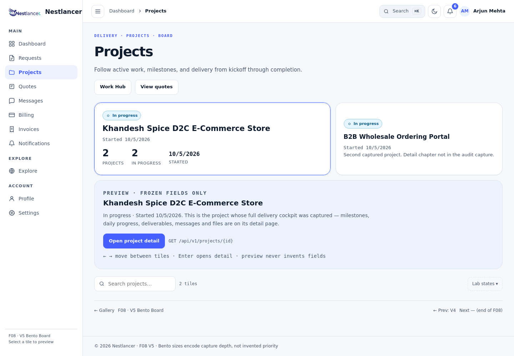

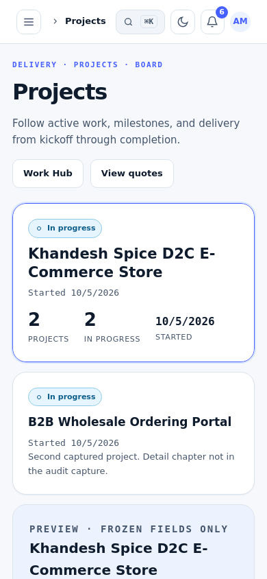

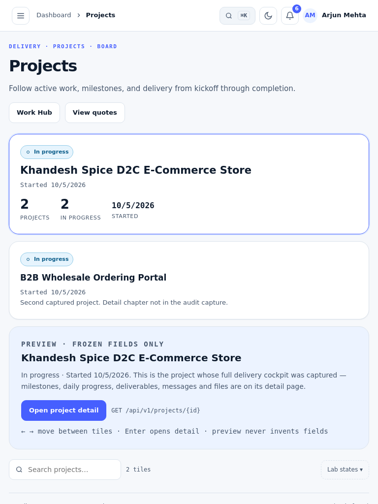

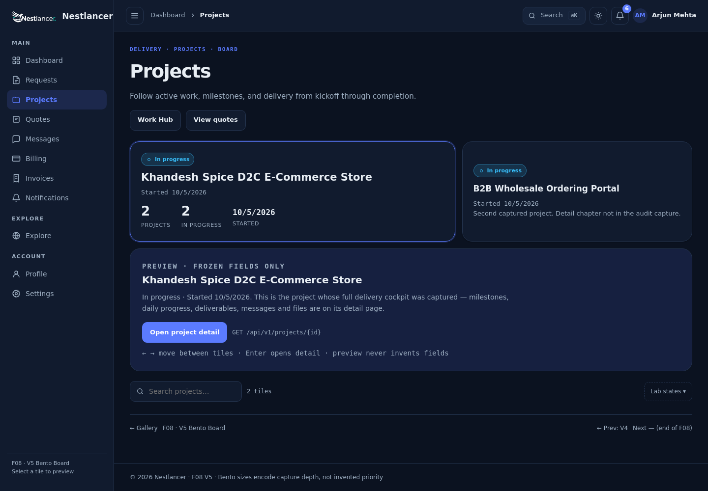

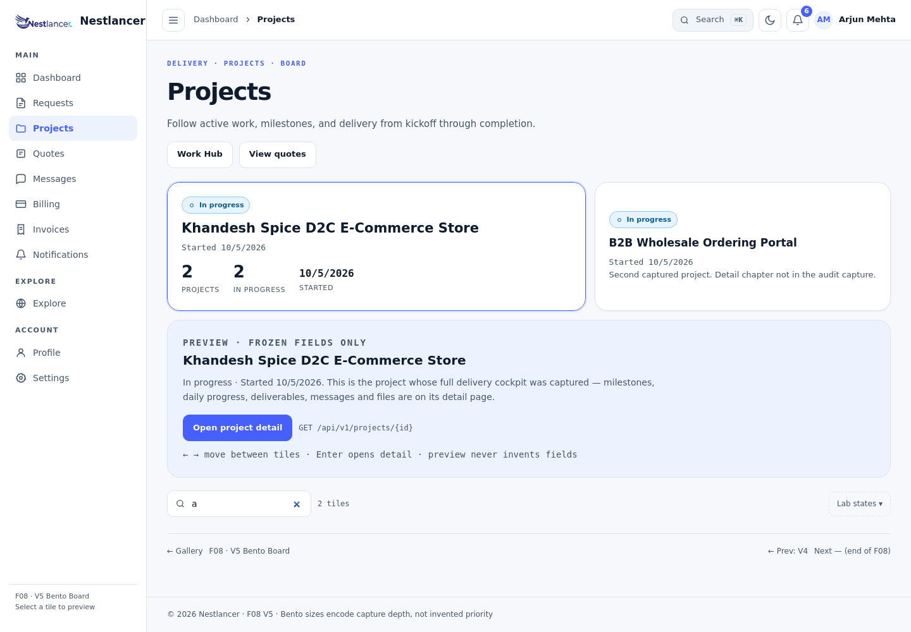


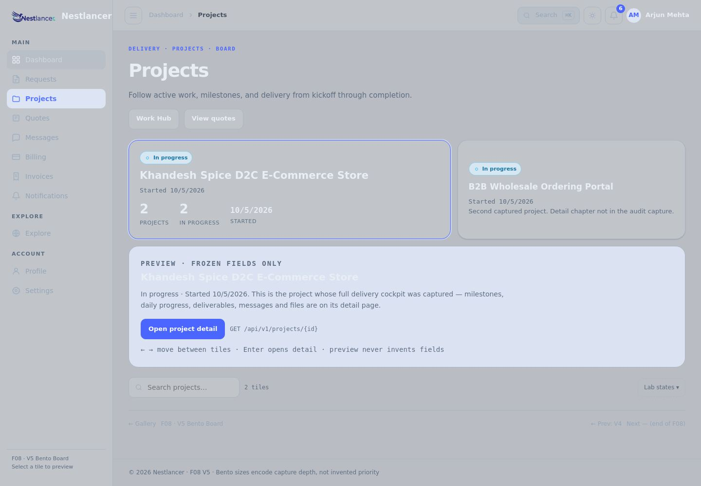
Blind comparison boards
Seeded labels A–E; the screenshots contain in-page version identifiers, so true blinding was incomplete. Mapping (review-evidence/raw/blind-mapping.json): A=V5 · B=V4 · C=V1 · D=V3 · E=V2.
One AI evaluator generated the board and mapping; board notes above were recorded in the session transcript before the mapping file was opened. This is a bias-reduction aid, not true experimental blinding.

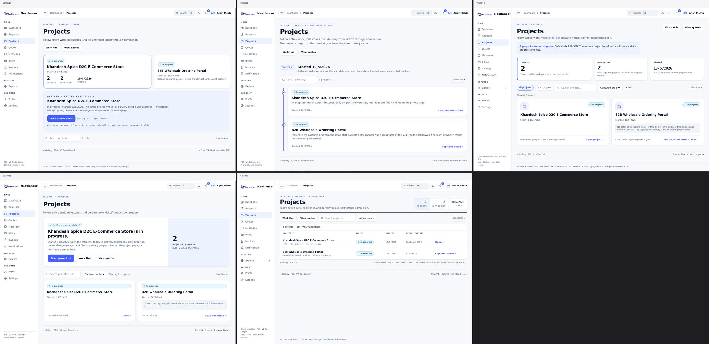

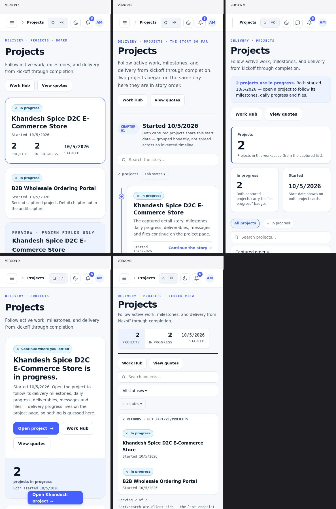
Pairwise consistency check (one evaluator, not votes)
| Pair | Better for family task | Reason |
|---|---|---|
| V1 vs V2 | V1 | Client cards vs audit-column ledger |
| V1 vs V3 | V3 | Priority hero resolves choice faster |
| V1 vs V4 | V1 | Direct grid vs story decoding |
| V1 vs V5 | V1 | Cleaner copy; preview duplicates tile |
| V2 vs V3 | V3 | Next-step clarity vs sparse table |
| V2 vs V4 | V2 | Sortable precision vs chapter metaphor (narrow) |
| V2 vs V5 | V5 | Inspectable tiles vs meta ledger |
| V3 vs V4 | V3 | Continue-where-you-left-off vs narrative |
| V3 vs V5 | V3 | Single priority + open vs preview duplication |
| V4 vs V5 | V5 | Functional board vs story framing |
One evaluator's 10-pair consistency check (S4.2), not human votes; no Bradley-Terry/Elo applied. All 10 agree with the rubric order; the V1-V4 pair prompted the documented V4 task-clarity re-check.
Coverage, limitations, change log
Persona coverage (no votes): Coverage relevance only: shared mobile header/menu defect is most relevant to phone one-handed and motor-access profiles; 4.33:1 contrast to low-vision profiles; V4 missing H1 and V1 inert tab pattern to keyboard/screen-reader profiles; V3 duplicated payment to cognitive-access and first-time profiles; V5 context-thin density to first-time profiles. No persona preferred or voted.
Task script: Generic T1-T7 + family core: sort/filter/search the list (select or search 'a') and record result; project-open controls inventoried (navigation belongs to F09).
- First-pass scores assigned from blind boards + raw evidence before reading prior winner claims (still unread).
Environment: Chromium 131.0.6778.33 (HeadlessChrome, Playwright bundled build chromium-1148) · Playwright 1.49.1 (pinned in review-evidence/tooling/package.json)
· axe-core 4.10.2 (pinned) · NOT cross-machine pixel-reproducible: no Docker in sandbox; pinned Playwright/Chromium used consistently for every page in this run.
Full record: review-evidence/review-manifest.json; machine data: review-evidence/scores.json.